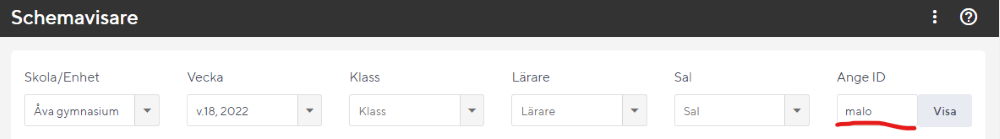
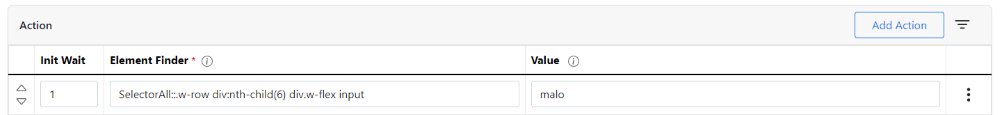
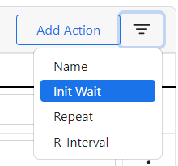

Auto Clicker - Auto Fill
Auto Clicker - Auto Fill är ett tillägg till Chrome som man kan använda för att automatiskt fylla i saker i textfält på en webbsida och även klicka på saker i en hemsida. Det tillägget kan användas för att ett schema ska visas automatiskt på web.skola24.se.
Följ stegen nedan för att installera och konfigurera Auto Clicker - Auto Fill.
Grundinställningar
- Lägg till Auto Clicker - Auto Fill från Chrome Web Store.
-
När du lagt till tillägget så visas en sida för att göra konfigurationer:
URL: Den webbsides-adress som tillägget ska köras på. Du som jobbar på Åva anger:
Name: Ett namn på konfigurationen som du själv väljer
Actions
Ländre ned på sidan med inställningar ska du fylla i Actions. Actions är det som du vill att tillägget ska utföra. Vi vill att tillägget automatiskt ska fylla i ett värde i fältet "Ange ID". Därefter vill vi att tillägget automatiskt ska klicka på "Visa".
Skriv in namnet
I kolumnen Element Finder skriver du in texten
I kolumnen Value skriver du in ditt lärar-id.
Lägg in en fördröjning
För att tillägget ska fungera som vi vill måste vi be det vänta lite mer att köra så att
sidan hinner laddas ordentligt. För att göra det klickar man på de tre strecken uppe till
höger vid knappen Add Action och klickar på Init Wait.

Skriv in värdet 1 i kolumnen Init Wait på raden som fyller i namnet i Ange-ID. Det
kommer göra att tillägget väntar en sekund innan det körs.
Tillägget ska klicka på "Visa"
Klicka på knappen Add Action. En ny rad skapas. Fyll i
I kolumnen Value skriver du in:
Klart!
Om du nu laddar om din schemavisare så ska den automatiskt visa ditt schema!
Ytterligare dokumentation av tillägget finns på deras hemsida: getautoclicker.com